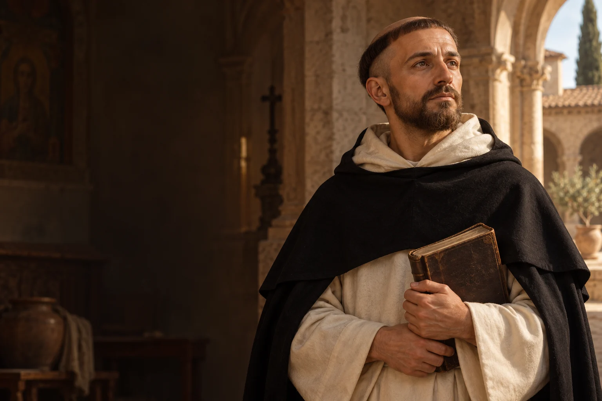

Słuchaj przed odpowiedzią
W trudnej rozmowie dopytaj drugą osobę o jej rozumienie sprawy.

ok. 1170–1221
Obchód liturgiczny: 8 sierpnia
Założyciel Zakonu Kaznodziejskiego.
Dominik Guzmán połączył głoszenie Ewangelii z modlitwą, wspólnotą i studium, dając początek Zakonowi Kaznodziejskiemu.
Poznaj historię jego życia →Słowo skierowane do innych zyskuje głębię, gdy wyrasta ze słuchania i przygotowania.
Refleksja redakcji W Modlitwie.Dominik rodzi się w Caleruedze.
Studiuje w Palencji i jest kanonikiem w Osmie.
Powstaje związana z jego działalnością wspólnota kobiet.
Dominik przedstawia papieżowi zamiar utworzenia zakonu.
Honoriusz III zatwierdza wspólnotę kaznodziejską.
Dominik umiera w Bolonii.
 Współczesne wyobrażenie artystyczne.
Współczesne wyobrażenie artystyczne.Około 3 min czytania · 5 rozdziałów
Dominik urodził się około 1170 roku w Caleruedze w Hiszpanii. Kształcił się w Palencji, a następnie związał z kapitułą katedralną w Osmie. Życie kanonickie łączyło wspólną modlitwę z przygotowaniem do posługi. Wczesne doświadczenia studium i życia wspólnotowego znalazły później miejsce w powstającym Zakonie Kaznodziejskim.
W średniowiecznej Europie kształcenie duchownych i życie wspólne miały rozmaite formy. Doświadczenie Dominika w kapitule dawało mu kontakt z codzienną modlitwą Kościoła, z której później korzystała rodzina kaznodziejska.
Podczas podróży Dominik zetknął się z religijnymi podziałami w południowej Francji. Odpowiedzią była działalność kaznodziejska oparta na rozmowie i prostym stylu życia. Nie da się całej złożoności ówczesnych konfliktów sprowadzić do jednej biografii. W opowieści o Dominiku szczególne miejsce zajmuje przekonanie, że głoszenie wymaga osobistego zaangażowania i przygotowania.
Dominik działał w czasie silnych napięć religijnych, których obraz byłby zniekształcony przez pominięcie szerszego kontekstu. Jego droga wiązała kaznodziejstwo z ubóstwem i przygotowaniem, choć późniejszych wydarzeń nie należy automatycznie przypisywać jego osobistym decyzjom.
Z działalnością Dominika związana była wspólnota kobiet w Prouille. W Tuluzie wokół niego zaczęli gromadzić się bracia, którzy pragnęli połączyć życie wspólne z głoszeniem. Powstająca wspólnota nie miała ograniczać się do jednego miejsca. Jej członkowie mieli podejmować posługę tam, gdzie ludzie potrzebowali nauczania i towarzyszenia.
Prouille przypomina, że u początków tej historii obecne były także kobiety i ich życie modlitewne. Powstawanie wspólnot było procesem, w którym uczestniczyło wiele osób. Samo imię założyciela nie opisuje całej pracy jego towarzyszy.
W 1215 roku Dominik udał się do Rzymu, a w grudniu 1216 roku papież Honoriusz III zatwierdził zakon. Bracia podejmowali działalność w miastach i ośrodkach nauki. Studium nie było celem oderwanym od życia: pomagało przygotować się do głoszenia. Modlitwa, życie wspólnotowe i troska o prawdę tworzyły razem sposób służby innym.
Wysłanie braci do ośrodków miejskich oznaczało spotkanie z rozwojem nauki i życiem mieszkańców. Idea zakonu łączyła mobilność z zakorzenieniem w modlitwie wspólnej. Kaznodzieja miał być przygotowany do służby, którą podejmował.
Dominik zmarł w Bolonii w 1221 roku. Jego dzieło trwa w rodzinie dominikańskiej obejmującej braci, mniszki, siostry i osoby świeckie. Ich historie i formy życia są różne, lecz łączy je inspiracja kaznodziejska. Wspomnienie Dominika pozwala spojrzeć na wiarę jako drogę, na której słuchanie, nauka i przekazywanie nadziei wzajemnie się uzupełniają.
Rodzina dominikańska nie jest jedną wspólnotą o identycznym sposobie życia. Jej członkowie realizują powołanie na różne sposoby, zachowując związek z modlitwą i głoszeniem. Dziedzictwo Dominika jest więc rozwijane także przez następne pokolenia.
Głoszenie było dla Dominika zadaniem podejmowanym razem z innymi, a nie samotnym przedsięwzięciem. Kształt zakonu rozwijał się po jego śmierci, gdy kolejne pokolenia spotykały nowe pytania i potrzeby. Wspólnota pozostawała ważnym miejscem przygotowania do tej służby. Studium miało pomagać w rozumieniu wiary oraz ludzi, do których kierowano słowa.
W trudnej rozmowie dopytaj drugą osobę o jej rozumienie sprawy.

Poświęć czas na lekturę, która pogłębi Twoje rozumienie ważnej kwestii wiary.

Zaproś kogoś do wspólnego projektu, w którym możecie wykorzystać różne umiejętności.
Ojcze nasz, któryś jest w niebie, święć się imię Twoje; przyjdź królestwo Twoje; bądź wola Twoja jako w niebie, tak i na ziemi. Chleba naszego powszedniego daj nam dzisiaj; i odpuść nam nasze winy, jako i my odpuszczamy naszym winowajcom; i nie wódź nas na pokuszenie, ale nas zbaw ode złego. Amen.
Tradycyjny tekst modlitwy; utrwalony polski wariant.Ojcze nasz →